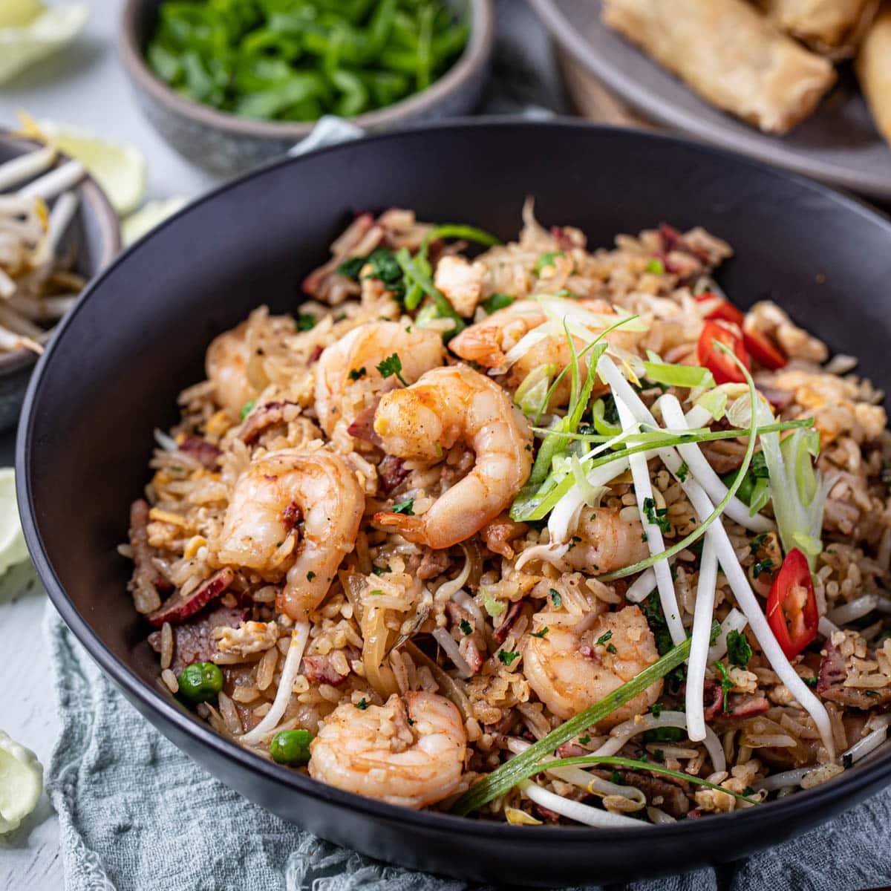

Prawn Fried Rice

Description
A straight-forward recipe for cooking an Asian-inspired prawn egg fried
rice.
Prep Time: 30 mins
Serves: 4
Ingredients
- 2 tbsp rapeseed oil
- 250 g long-grain brown rice
- 150g frozen peas
- 100 g mangetout
- 1 onion, finely chopped
- 2 garlic cloves, crushed
- 15 g ginger, finely grated
- 150 g raw king prawns
- 3 medium eggs. beaten
- 2 tsp sesame seeds
- 1 tbsp dark soy sauce
- 1 tbsp rice wine vinegar
- 4 spring onions, sliced
Steps
- Cook the rice
-
Blanch the peas and the mangetout in boiling water for 1 min and then
set aside alongside the rice.
-
Heat the oil in a wok over a medium heat and fry the onion until golden
brown.
-
Add the garlic and the ginger and then add the blanched vegetables
before frying for 5 mins.
- Add the prawns and fry for a further 2 mins.
- Add the rice into the wok.
-
Make space on one side of the wok and pour in the beaten eggs. Scramble
the eggs and then them mix into the rest of the ingredients.
-
Add the sesame seeds, soy sauce and rice wine vinegar and continue
mixing together.
- Serve and top with the chopped spirng onions.